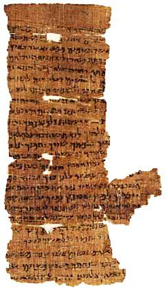

Nash Papyrus

- Find Name
- Nash Papyrus
- Description
- The Nash Papyrus is a single sheet of papyrus made from four fragments, carrying 24 lines of Hebrew text about 7.5 by 12.5 centimeters. Acquired in Egypt in 1902 by W. L. Nash, secretary of the Society of Biblical Archaeology, it was presented to Cambridge University Library in 1903 and described by Stanley A. Cook the same year. Dated to about 150-100 BC, it was the oldest known Hebrew biblical manuscript before the Dead Sea Scrolls were found in 1947. It contains the Ten Commandments, combining Exodus 20:2-17 and Deuteronomy 5:6-21, followed by the beginning of the Shema (Deuteronomy 6:4).
- Historical Period
- Second Temple period
- Evidence Class
- Direct
- Interpretations
- The papyrus differs substantially from the Masoretic Text and is closer in places to the Septuagint, including the commandment order Adultery-Murder-Steal and the omission of 'house of bondage,' suggesting it preserves a Hebrew text-form related to the one behind the Greek translation. It is thought to be the daily worship text of an Egyptian Jew, combining the Decalogue and Shema as in the ancient morning liturgy. Its exact provenance is unknown, though it was allegedly found in the Faiyum, so claims about its origin should stay tentative.
- Related Places
- Related Books
- Related People
- Scripture Illuminated
- Biblical Significance
- Before 1947 it was the oldest Hebrew Bible manuscript known, and it still witnesses to a pre-Masoretic Hebrew text behind the Septuagint.
- Artifact Date
- c. 150-100 BC
- Current Location
- Cambridge University Library
- Date Discovered
- 1902 (acquired)
- Discovery Location
- Egypt (allegedly Faiyum; provenance unknown)
- Timeline Era
- Return and Second Temple
Awaiting Review Not yet checked against scholarly sources. Treat its claims as provisional until this entry is reviewed. About verification
Last reviewed: not yet reviewed